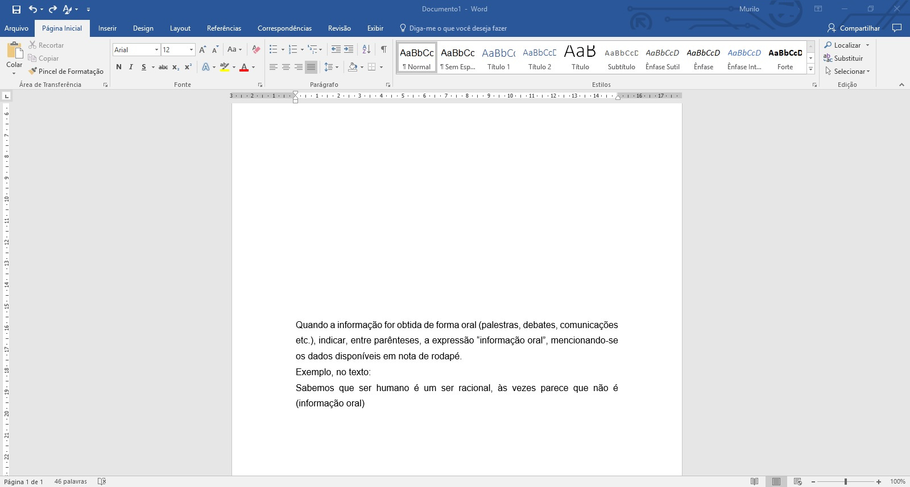
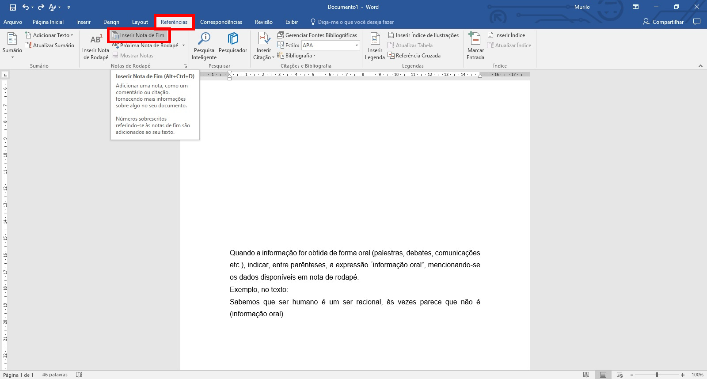
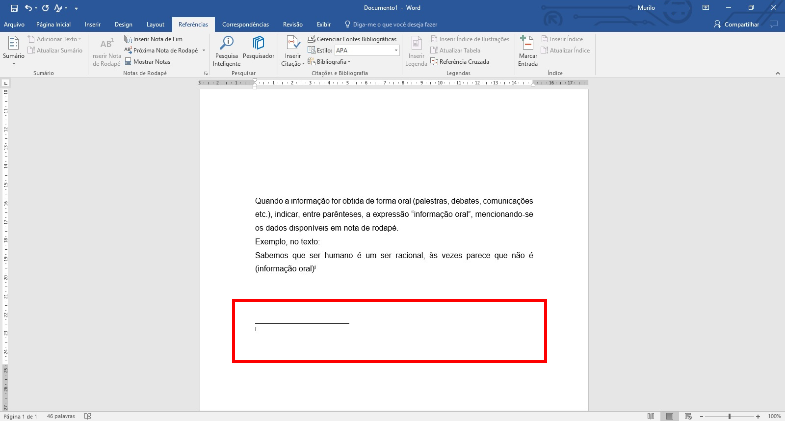
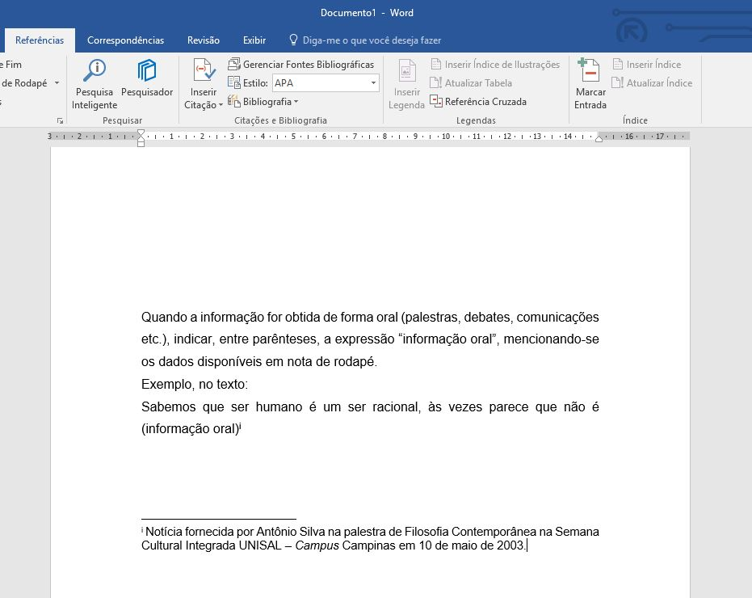

As instruções a seguir têm o objetivo de colocar uma nota de rodapé.
Digite seu texto como mostra a Figura 1.
Observação: o texto digitado está na página 41 do arquivo "GUIA TRABALHOS ACADÊMICOS_abril 2015".
No menu superior, selecione Referências.
Clique em Inserir Nota de Fim.
Certifique-se que o cursor está posicionado ao lado da palavra que recebe a nota. Por exemplo, neste caso o cursos está ao ao final do texto "oral)".
Veja Figura 2.
Ao clicar em Inserir Nota de Fim, o resultado é igual à Figura 3.
Acrescente seu texto conforme a Figura 4.
A Figura 4 mostra o resultado final após inserir a nota de rodapé.
